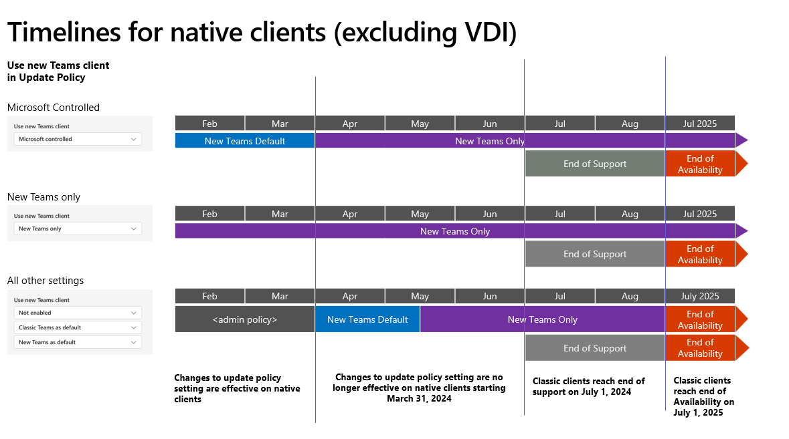
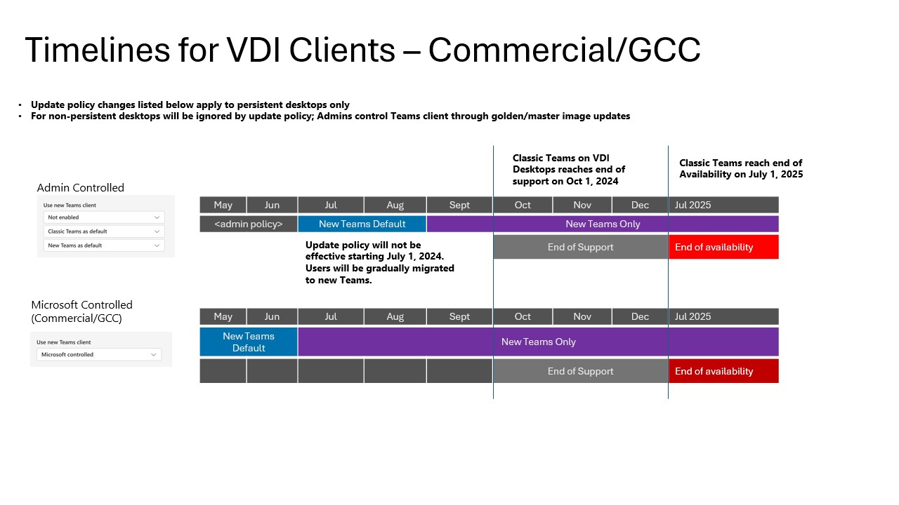

こんにちは。Unified Communications サポート チームです。
いつも Microsoft Teams をご利用いただきありがとうございます。
今回は MC718748 によって、クラシック Teams の可用性について、一部変更がございましたので、公開情報内に記載がございます内容等を補足説明させていただきます。
MC718748 による変更について - VDI を除くクライアントが対象 -
当初、2024 年 3 月 31 日にクラシック Teams の可用性が終了し、新しい Teams への自動アップデートが行われることがアナウンスされておりましたが、
多くのお客様より、新しい Teams への自動アップデートのスケジュールについて、不安のお声をいただきました。
これを受けて、弊社内でもお客様のスムーズな移行をサポートするため、一部、クラシック Teams の可用性に変更が設けられました。
新しい Teams への自動アップデートについて、スケジュールを変更する必要がございます場合には、3 月 31 日までに更新ポリシーの設定変更をお願いいたします。
ポリシーごとの動作について、下記にご説明いたします。
＜Teams 更新ポリシーの “新しい Teams クライアントを使用する” 設定 が、[新しい Teams のみ] の場合＞
既に新しい Teams への移行が完了し、新しい Teams のみを利用する状態となっているため、3/31 以降で動作が変わることはございません。
＜Teams 更新ポリシーの “新しい Teams クライアントを使用する” 設定 が、[Microsoft が管理] の場合＞
- 4 月初頭以降 : トグルが削除され、クラシック Teams への切り替えが不可となります ([新しい Teams のみ] と同様の状態となります)。14 日後に、クラシック Teams の自動的なアンインストールが試行されます。
＜Teams 更新ポリシーの “新しい Teams クライアントを使用する” 設定 が、[無効] or [既定として従来の Teams] or [既定として新しい Teams] の場合＞
- 4 月 1 日 - 5 月中旬まで : 既定のアプリが新しい Teams へと変更となりますが、トグルによるクラシック Teams への切り替えは可能です。
- 5 月中旬以降 : トグルが削除され、クラシック Teams への切り替えが不可となります ([新しい Teams のみ] と同様の状態となります)。14 日後に、クラシック Teams の自動的なアンインストールが試行されます。
＜何等かの理由により、新しい Teams への更新ができない、あるいは、新しい Teams の前提要件を満たさない場合＞
MC783985 でアナウンスされた変更について、追記しています。
- 2024 年 7 月 1 日 : クラシック Teams のサポートが終了します。
- 2024 年 10 月 23 日 : Win 7, 8, 8.1 と Mac OS Sierra (10.12) において、クラシック Teams の可用性が終了します。
- 2025 年 7 月 1 日 : 全ての環境において、クラシック Teams の可用性が終了します。
なお、サポートの終了と可用性の終了の違いについては、下記の通りとなります
- サポートの終了: クライアントの更新プログラムや新機能は提供されなくなり、また、クラシック Teams クライアントに関するサポートの問題の解決もサポートされません。
- 可用性の終了: この期限が過ぎると、クライアントは動作を停止し、ユーザーはクラシック Teams クライアントで作業できなくなります。

参考情報: End of availability for classic Teams client
※ 日本語翻訳のページでは、一部の内容について更新が行われておりませんため、原文ページのご案内となります。
VDI 環境のスケジュール
VDI 環境の場合には、通常のクラシック Teams デスクトップとは異なるスケジュールが設けられています。
現時点では、クラシック Teams for VDI は、2024 年 10 月 1 日にサポートが終了する予定となります。
そして、2025 年 7 月 1 日に可用性の終了が予定されており、それ以降はクラシック Teams を利用できなくなりますため、新しい Teams への移行に向けた準備を進めていただきますようお願い申し上げます。

参考情報: 新しい Teams for Virtualized Desktop Infrastructure (VDI) へのアップグレード
なお、スケジュールについては、今後変更となる可能性もございます。
変更を確認次第、速やかに本サポートブログも更新を行って参りますが、即時での反映が難しい場合もございますこと、予めご了承ください。
NOTE
- 2024 年 3 月 1 日に、初版を公開しました。
- 2024 年 3 月 4 日に、第二版を公開しました。
- 2024 年 4 月 30 日に、第三版を公開しました。
- 2024 年 5 月 8 日に、第四版を公開しました。
※本情報の内容（添付文書、リンク先などを含む）は、作成日時点でのものであり、予告なく変更される場合があります。